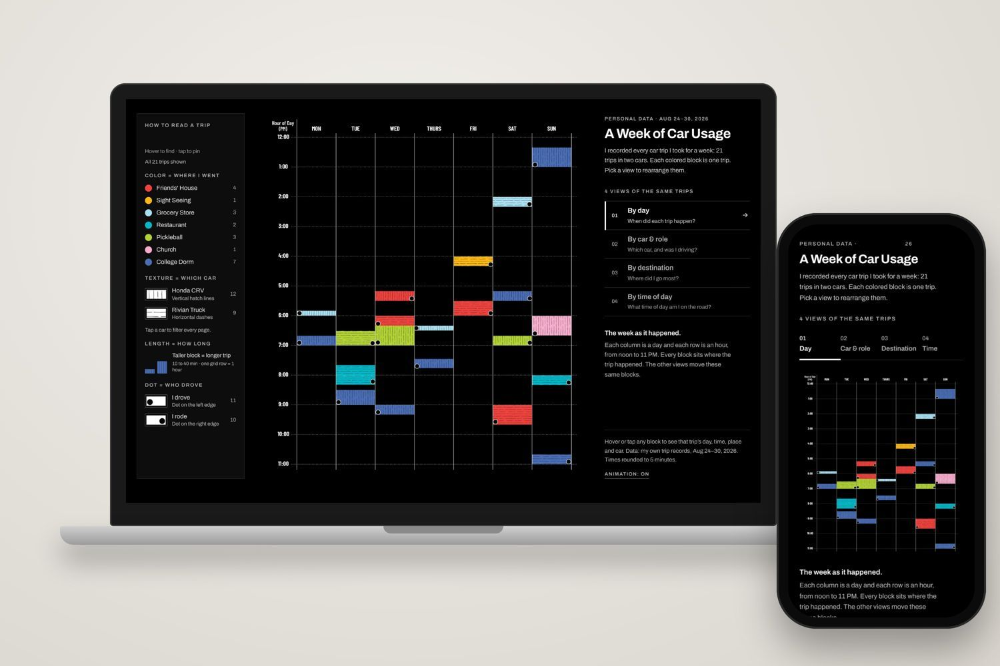

Track a week of my own life and turn the data into a visualization that people can explore.
I logged every car trip I took from August 24 to 30, 2026, then drew the data by hand. Twenty-one trips hold several patterns at once: where I went, which car I took, whether I was driving, and when.
Four questions per block.
Every piece uses the same four encodings.
One week, four mediums.
From sketches to an interactive, with one review that changed everything.
Hover any image for the note from my process book. Click to see it full size.
Many charts before one
I logged every car trip I took for a week, then put the same week into as many chart types as I could think of, to see which questions each one made easy to answer.
Total distance by day, and each drive as a stem.
Me vs. a friend driving.
The first question that felt like mine: did I drive or ride along more?
CRV vs. Rivian per day.
Another way to read the week.
Narrowing to two roles
Layouts built around driving and riding. In the refined chart, texture stands for the car for the first time, and it stays through every version after.
Each square is 10 miles, filled where I rode.
Driving on one side, riding on the other.
Green for days I mainly drove, orange for days I mainly rode.
Stipple for the CRV, hatch for the Rivian.
Faster than redrawing
I photographed the paper sketch and worked on top of the photo on the computer, so I could test a new color system or layout in minutes.
Working on top of a photo of the sketch.
Testing a layout on the computer.
Testing color for each destination.
One pill per trip, sized by distance, colored by destination.
A review that changed the axis
Classmates and my professor kept reading the bars as time. My notes circle one line: “make more timeline based.” Block length switched from distance to time in the car.
“Make more timeline based.”
Green marks the ones I applied.
Professor Sitkin drew the trips as shapes along a time-of-day axis.
At full-day scale the blocks were too thin, so I narrowed the axis to when most of the driving happened.
Drawn by hand
A 5 × 7 inch postcard in marker: the visualization on the front, the key on the back.
Car Usage by Day. Each shape is one trip, placed by day and hour.
The key: color for destination, a circle for the Rivian, an X for the CRV.
Three rounds on black
Most of my driving happened in the evening and at night, so the poster is black. I printed round 2 in tiles at full size for critique.
The chart turned portrait.
A dot on every block: left edge when I drove, right edge when I rode.
Round 2 tiled on the wall beside the postcard.
True black, fine dotted hour lines, a lighter sky blue for the grocery store.
Six ways it could move
Before animating anything I storyboarded six concepts, each rearranging the same blocks to land one takeaway. I built the motion piece from concept 02, Home Base.
Short bursts across mostly empty afternoons.
Most of my driving goes back to one place: the dorm.
The CRV is the car I drive. The Rivian is the car I ride in.
7 trips end at the dorm.
Stacked by destination.
Five versions
The viewer is in control: sort all 21 trips four ways and hover any block to see that trip. Each page is a question, like “When did each trip happen?”
Two Cars, Two Roles: filter by car, then compare by role.
Mid-transition: blocks moving from the calendar into the destination columns.
A time-of-day page and an interactive key.
Each view asks a question.
If the concept is good, everything else falls into place.
Because the concept was solid on paper first, each new medium took little iteration to reach. A QR code in the poster’s header opens the interactive, so the print becomes the way in.
18 × 24 in, framed.
Home Base: the trips that end at the dorm light up, then the blocks stack by destination.
Four views: by day, by car and role, by destination and by time of day.

Opens the live interactive in a new tab.
Open the interactive ↗Test the concept early.
How important it is to test the strength of a concept early, and that it is okay to pivot. Finding the flaws in my own designs early made the final project much better.
“Next time I would put the same data into more chart types from the start, and think about interaction while I was still drawing.”